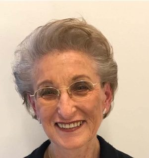
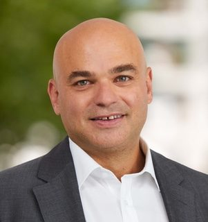
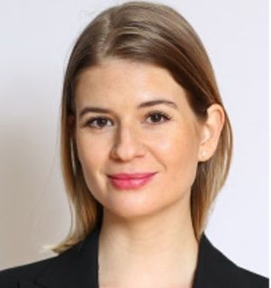
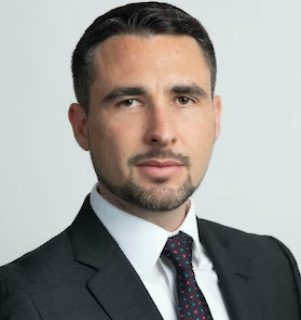
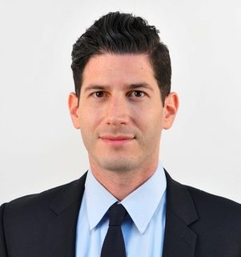

Founder & President
Yvette Merzbacher
Yvette is proud to inspire and educate a generation to understand who they are, to learn about their cultural heritage, history, and traditions, and to be proud of their Jewish identity and roots.
Born in Peru, studied in the US, resides in Switzerland.
Professional background: Industrial engineering.

Board Member
Yonat Floersheim
Survivor of the camps in Transnistria, Ukraine, Yonat has joined LIVINGSTONES to share her wisdom and first hand experience to make our work impactful and relevant more than ever.
Born in Romania, survived the camps in Ukraine, detained in Cyprus, studied in Israel and the US, resides in Switzerland.
Professional background: Gynecology and Obstetrics.

Board Member
Ronny Siev
Ronny cares a lot about the Jewish heritage in Switzerland and fight against Antisemitism. As a son of a Holocaust survivor, he is keeping his family history alive by talking to teenagers in schools all around Switzerland.
Born and studied in Switzerland, worked in Israel, the Amazon, Spain, Bahamas, and the UN.
Professional background: Political science, international relations, and banking.

Board Member
Judith Yampolsky
Judith is eager to utilize her expertise and compassion to help further the organization's noble mission and drive positive change in relation to intercultural dialogue, Jewish identity and Jewish memorial.
Born in Germany, studied in the US, worked in Spain, and Switzerland, resides in Switzerland.
Professional background: Management Consultant, and Private Banking.

Board Member
Tal Yampolsky
Tal has been involved since early years in Jewish heritage and identity initiatives. LIVINGSTONES is an additional important cornerstone in his personal and national journey.
Born in Ukraine, grew up in Israel, studied in Israel and the UK, worked in Switzerland and around the globe.
Professional background: Financial industry, real estate, and entrepreneurship.

Advisor
Shiran Katz
Being exposed to diverse cultures, Shiran developed at a young age resilience and heightened sense of empathy and understanding for others. This led him to be active in various charitable organisations.
Born in Israel, grew up in Germany, studied in France and the US, currently working between Switzerland, Israel and Mexico.
Professional background: Private Banking & Investment Advisory.